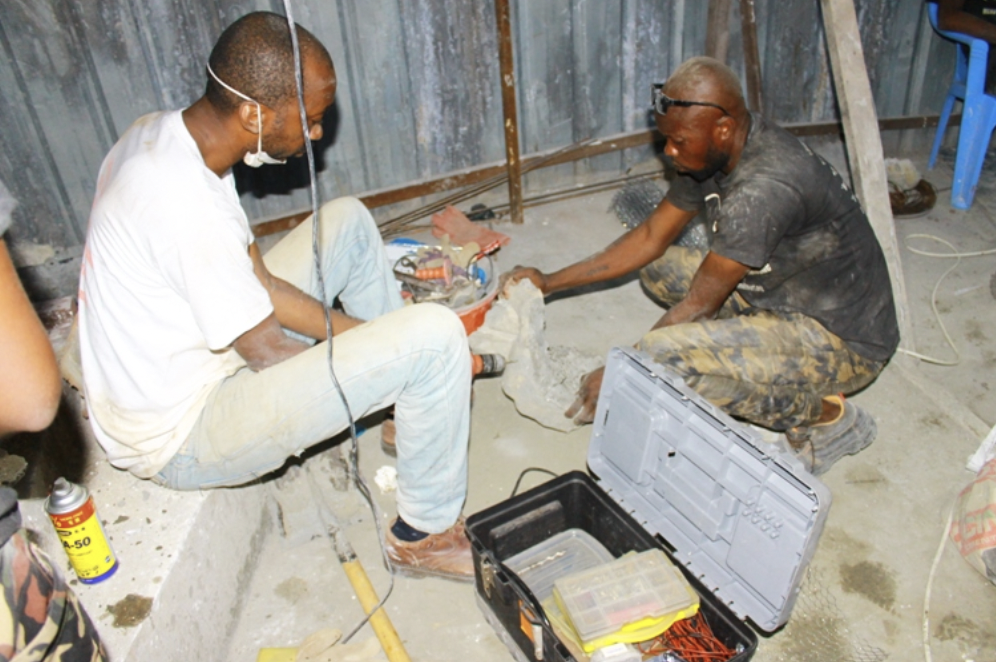
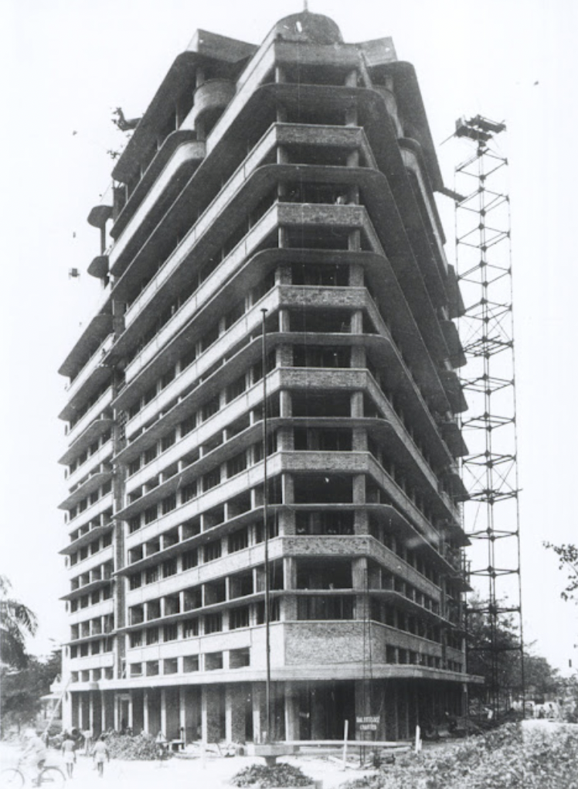

Overview
Construction
Construction of the Congolese Soldiers Memorial was initiated by former DRC President Joseph Kabila with the then Chief of Staff of the Congolese armed forces, General Didier Etumba, overseeing the project. The monument was designed by Dr. Van Ntoto of the Kinshasa-based Anko Design Corporation with Congolese monumental sculptor Christophe Meko Disengomoka physically creating the piece. The memorial was Disengomoka’s first time attempting military art in his 25-year career. He stated in an interview with the French media outlet Dépêches de Brazzaville that the monument was designed to honor the DRC’s “valiant soldiers, dead or alive.”

Description: Sculptor Christophe Meko Disengomoka working on one of the molds for the monument.
Source: Media Congo
Location
 Description: Construction of the Forescom building nears completion in 1946.
Source: Kosuba Awate’s Blog
The Mémorial du Soldat Congolais was erected in the FORESCOM roundabout in Kinshasa, near the FORESCOM tower. The Société Forestrière et Commercial du Congo (FORESCOM) was established in 1912 by Forminière, a holding company created by King Leopold II in 1906 to deflect attention from his personal rule and exploitation of the Congo, and managed mining and timber sites across the Congo. The tower was completed in 1946, becoming the first skyscraper in Leopoldville, now renamed Kinshasa, and immediately became the most sought after professional location in the city. The Danes and South Africans opened consular offices in the Forescom tower and the Israeli and Taiwanese embassies were located in the building. At the time of its construction, the tower was regarded as a point of pride for both Belgian colonists and colonial subjects alike, as it represented the success of the colony, as well as the Congo’s integration into global modernity. The authorities’ decision to place the memorial at the former seat of Beligan pride suggests an attempt to reclaim the culturally significant location from its history of colonialism. It is a physical reclamation of an area that facilitated continued European colonization and exploitation of the country’s mineral riches.
Relevance Today
Description: Congolese President Felix Tshisekedi lays a wreath at the steps of the Congolese Soldiers Memorial during the annual commemoration in 2022.
Source: Top243 News
An annual commemoration of Congolese soldiers is held at the memorial on May 17, which marks the date the Alliance of Democratic Forces for the Liberation of Congo-Zaire (AFDL) entered Kinshasa in 1997. The AFDL seized control of the Democratic Republic of the Congo–then known as Zaire–from dictator Mobutu Sese Seko after nearly 30 years of military rule. AFDL leader Laurent-Desire Kabila became President and changed the country’s name to the Democratic Republic of the Congo and began transitioning it toward democracy, although progress has been mixed. Since the memorial’s inauguration in 2017, DRC Presidents Joseph Kabila and Felix Tshisekedi have presided over the celebration alongside high ranking officials in the Congolese army (FARDC).
The annual ceremony additionally serves as to publicly bolster the connection between the Congolese armed forces and the acting Congolese president, who serves as Supreme Commander of FARDC. The DRC’s eastern region–particularly in Ituri, North Kivu, and South Kivu–has been continuously embroiled in conflict since the memorial’s inauguration with rebel groups, terrorist groups, and regional proxy actors. The federal government relies on the nation’s armed forces to combat these threats and secure the DRC’s citizens and sovereignty. Many of the armed groups have stated their intention–as evidenced by the Rwandan-backed M23 rebels–to overthrow President Tshisekedi and install new leadership in the country. This highly symbolic event demonstrates both the president’s appreciation and recognition of the armed forces while visibly showing the military’s loyalty to the regime.
Description: Officials in the Congolese army stand before the Congolese Soldiers Memorial during the 2022 ceremony. Source: Top243 News
Motto and Significance
The motto of the Congolese armed forces (FARDC) is Ne jamais trahir le Congo (Never Betray the Congo). At the annual celebration at the memorial, the FARDC Chief of Staff opens the ceremony by repeating the motto and emphasizing soldiers duties and commitment to serving their country. The repetition of the motto at the ceremony raises larger questions about the Congolese military’s role in securing and protecting the DRC. Under President Mobutu, the military was weakened significantly and prone to factionalism and largely beholden to systems of corruption and patronage. During the First Congo War, the military was unable to respond to the ADFL and regional actors’ military advances due to high ranking FARDC officers actively selling government equipment for personal benefit. The motto serves as a stark reminder of the military’s past role in facilitating and allowing its sovereignty to end.
Since Laurent-Desire Kabila took power in 1997, however, the military hasn’t lived up to its motto. Rebel and insurgent groups have been reintegrated into the military despite their stated intentions of overthrowing elected leaders. Military commanders have enriched themselves by controlling the mining trade and erecting roadblocks in the country’s eastern regions. The military itself is feared by significant portions of the population in the country’s war torn East due its complicity in war crimes and human rights violations including extrajudicial killings, looting, and sexual assaults. FARDC’s abuse has contributed to the worsening security situation and is responsible, in part, for the formation of many of the militias that operate in the country’s East.
Description: Members of the former CNDP rebel group march in North Kivu province in 2012.
Source: Enough Project
The continued usage of the motto and its symbolism in opening the ceremony is in many ways ironic. The Congolese army has historically betrayed the country and its people and continues such behavior to a lesser extent in the present. Its repetition is arguably more of a PR move than reflective of the reality in the DRC, despite the grandiose rhetoric and principles articulated by high ranking members of the military.